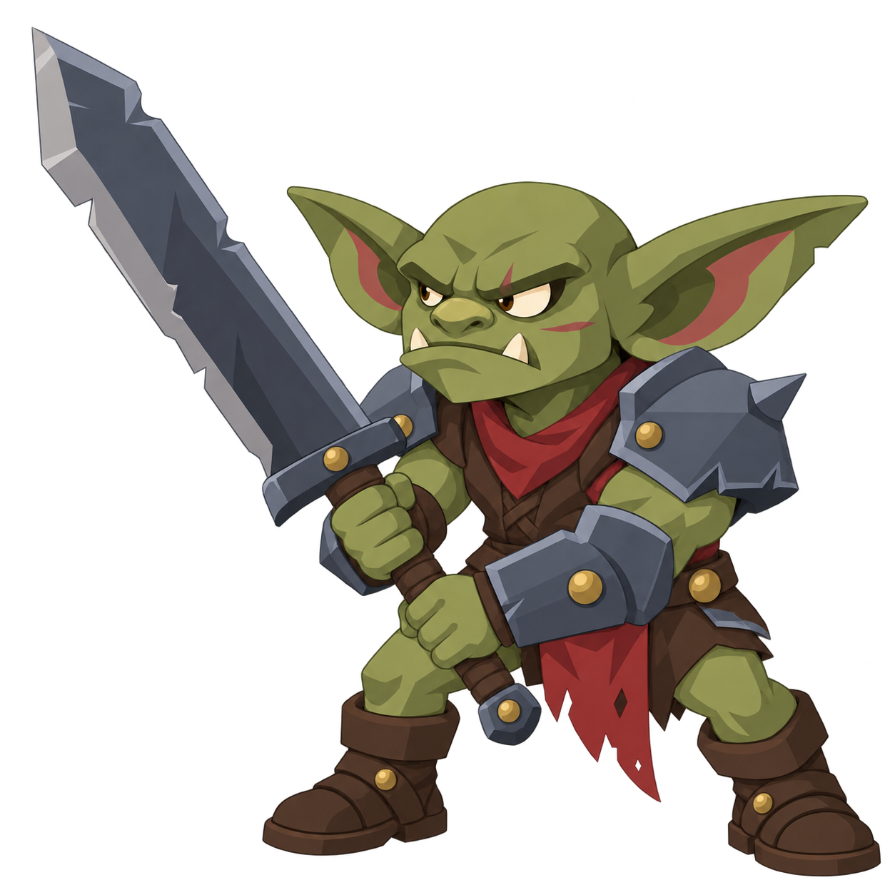
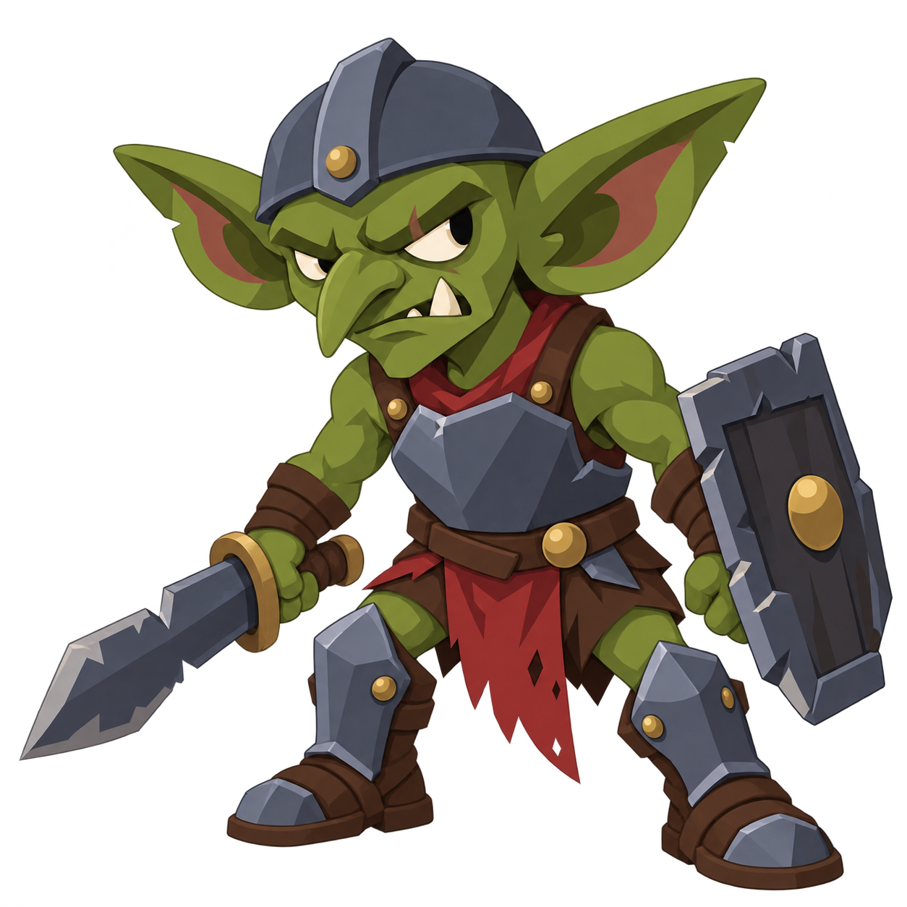
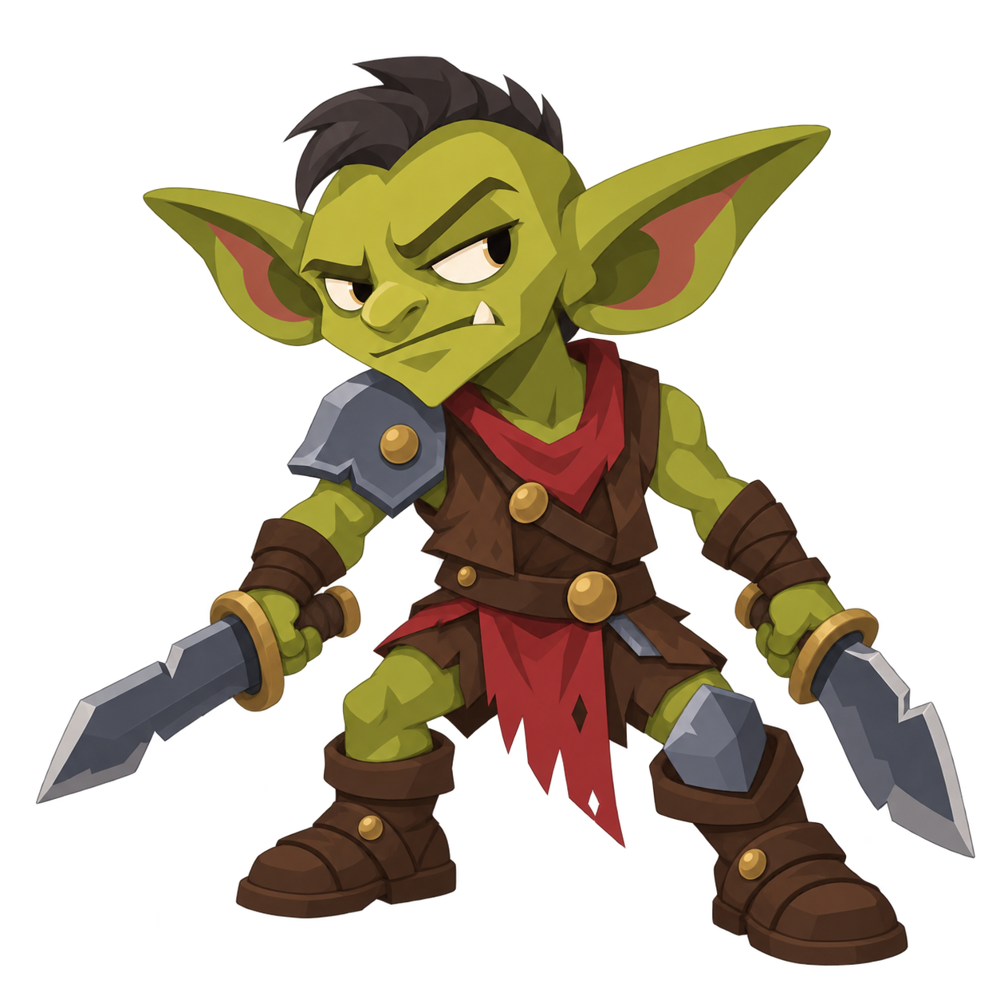

Gray-olive skin, broad face, blunt nose. Shoulder and forearm armor; both hands on one sword.
Transparent PNG
Deeper moss-olive skin, hooked nose, uneven tusks. Chest and shin armor, bare shoulders.
Transparent PNG
Warm yellow-olive skin, narrow face, pointed chin. One shoulder and opposite knee armored.
Transparent PNGAll three await approval. Concept PNGs; no rig or animation yet. Approximate body-height alignment for comparison.